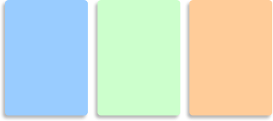

OOP-up your styles
by Aaron Gustafson
Seems like everywhere you turn someone is talking about Object-Oriented Programming (OOP). Some scripting languages have been object-oriented from the beginning, while others have moved in that direction over time. OOP makes sense: you can create generic classes, functions, etc. that can be used whenever they’re needed and can serve multiple purposes. And for designers/developers into Web Standards, it makes a lot of sense too. Just as we separate content/structure from presentation, OOP allows us to separate behavior (or presentation) from a given situation. Generic code is reusable, scalable and tends to be less verbose than situation-specific code.
While working on a new website, I got to thinking about OOP and its applications for presentation as well. Sure, styling with CSS isn’t really programming per se, but it is possible to view CSS from an object perspective. Dan Cedarholm sowed the seed of this idea in Mountaintop Corners, but I felt we could abstract it even further.
The Example
Let’s say we want to create several text boxes with rounded corners and a drop shadow, each with a different background color:
Now marking these boxes up is pretty simple, this is well covered territory. We’ll take it a little farther though, letting the cascade do more of the work for us (rather than class-ing each div):
<div class="blueBox"><div><div><div> <p>Content goes here.</p> </div></div></div></div>
Now we can apply some style. We might consider creating a class for each colored box once we’ve cut the necessary corners. For example:
div.blueBox {
background: #9cf url(topLeft.gif)
top left no-repeat;
color: #fff;
float: left;
margin: 0 0 10px;
padding: 0;
max-height: 3000px;
max-width: 3000px;
}
div.blueBox div {
background: url(topRight.gif)
top right no-repeat;
padding: 0;
}
div.blueBox div div {
background: url(bottomLeft.gif)
bottom left no-repeat;
}
div.blueBox div div div {
background: url(bottomRight.gif)
bottom right no-repeat;
padding: 10px 10px 17px 15px;
}
/* reset for any inner divs */
div.blueBox div div div div {
background: transparent;
padding: 0;
}
Repeating all of that code for each box color we propose seems a little redundant. Thinking more generically, we can drop the background-color and background-image values from each div to make a generic class, “box”:
div.box {
background: url(topLeft.gif)
top left no-repeat;
float: left;
margin: 0 0 10px;
padding: 0;
max-height: 3000px;
max-width: 3000px;
}
div.box div {
background: url(topRight.gif)
top right no-repeat;
padding: 0;
}
div.box div div {
background: url(bottomLeft.gif)
bottom left no-repeat;
}
div.box div div div {
background: url(bottomRight.gif)
bottom right no-repeat;
padding: 10px 10px 17px 15px;
}
/* reset for any inner divs */
div.box div div div div {
background: transparent;
padding: 0;
}
Then we can greate another class for each color which fills in the color-specific info:
div.blue {
background-color: #9cf;
color: #fff;
}
We apply the two classes to the div as such:
<div class="box blue"><div><div><div> <p>Content goes here.</p> </div></div></div></div>
And we can go even further, applying addional rules to change the appearance of the content within the boxes depending on their color:
div.blue h1 {
color: #070;
margin: 0 0 .25em;
}
div.blue a,
div.blue a:link,
div.blue a:visited {
border-bottom: 1px dotted #070;
color: #070;
text-decoration: none;
}
div.blue a:focus,
div.blue a:hover {
border-bottom-style: solid;
}
Now we are using much more compact CSS that is capable of being reused (for instance, we could add additional colored boxes further down the line). This sort of thinking can help speed development and keeps your code flexible and reusable. And, if you’re adventurous, you can then take this simple example even further by combining this technique with semantic id-ing to great effect.